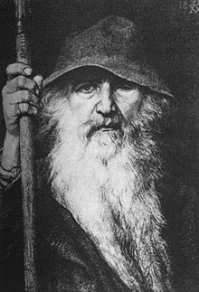
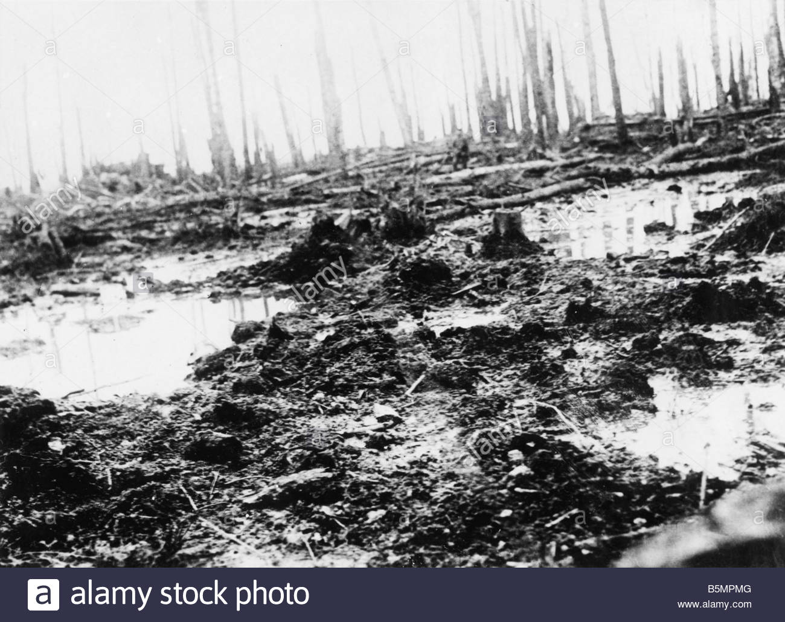

Inspiration
Norse Mythology

Several comparissons can be made to norse dieties in Tolkien's works, making it plausible that the author may have borrowed from the Edda to create several of his characters. For example, the norse god Odin resembles Gandalf the Grey, for both individuals constitute a similar appearance and charcter such as; a hooded cape, a grey beard, a staff, and wisdom beyond all living things. Furthermore, both charcters coincide an ability to cast spells, and harbour a special relationship with animals, including birds and horses. on one hand Gandalf maintains a relationship with the Giant Eagles of Middle Earth, and the lord ans swifest of horses Shadowfax. On the other hand, Odin is assiocate with two ravens Hugninn and Muninn, and the eight legged horse Sleipnir.
Elsewhere, other characters can be ascertained to have norse roots including the elves and the dwarves. In norse myth, elves are creatures of light who are the fairest of the nine worlds, and are gifted in spell casting. In contrast, the dwarves (or dark elves) of norse myth are described as small craftsmen who live in caverns and are often charcterterised by their greed. The traits mentioned for either norse species is practically identical to those protrayed in the Lord of the Rings.
Childhood
Tolkien draws from his childhood friends to create the Hobbits in his stories. It is widely consensual that hobbits are representative of children; hobbits are personified by their jolliness, appetite, innocence stout heartedness, and unlike other races in Middle Earth they can resist the enticement of power; such characterisitcs are common amongst children, especialy innoncence and appetite. Moreover, the four principal hobbits in The Lord of the Rings are inspired by Tolkien's school chums, of whom he posses a a profound comradery with. This comradry is translated into the hobbits' own affinity for each other that aids them in persevering through the quest.
World War 1

The battlefields of Flanders in which Tolkien fought for the british army during world war one are the canvas for the landscape of Mordor. Drawing from the terrifying flame throwers, artillery, and gas; Tolkien used his experience in the war to create the dark land of Mordor. Mordor is described as barren, toxic, gasous, filled with craters of heat, and leading up to it are dead marshes in which resides the bodies of the fallen from previous wars which have bewithcing property on mortals that observe them. The latter is representative of dead bodies in a battle field and the affect they had on the young author. In all, Tolkien pulled from the devastation of war to create his own version of hell.